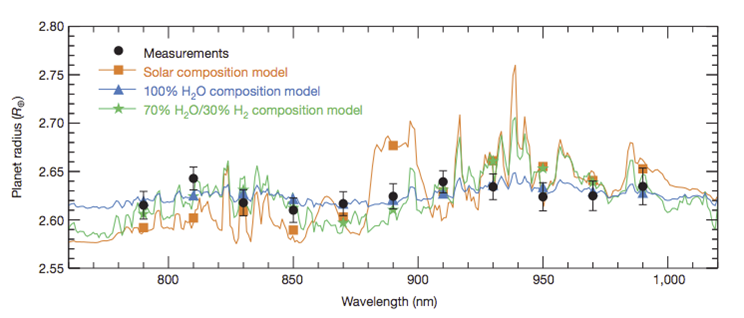

|
|
||||||
|
||||||
NGTS Science ProgrammeThe NGTS is a wide-field observing facility made of a compact ensemble of telescopes. It is designed to carry out a wide-field search for transiting planets on bright stars, reaching 1 mmag precision on a 13th V magnitude star. The facility is sited at the European Southern Observatory's Paranal Observatory in Chile, home of the VLT, in order to benefit from the unique weather conditions and strong synergy with the VLT and later the E-ELT for follow-up science. The whole facility is designed to be operated in a robotic mode without on-site observers.The prime objective of the survey is to search for transiting planets in the size range of Neptune and below, with diameters between 2 to 5 Earth size on bright stars. The many recent discoveries of planetary systems harbouring Neptune-mass planets and super-Earths clearly indicate that low-mass planets around solar-type stars must be very common. This is reinforced by statistical considerations and by newly developed planet formation models (Mordasini et al. 2009, A&A, 501, 1161). Nevertheless, the composition and structure of these planets remains a matter for debate. With the detection of e.g. the close packed system of super-Earths around Kepler-11 and the extraordinary range of small planets discovered by Kepler it is clear that, as with the gas giants, there is great diversity in the structure of super-Earths.

Mass radius relationship of small transiting planets, with Solar
System planets shown for comparison. Planets Kepler-11b to Kepler-11f
are represented by filled circles with 1-sigma error bars, with their
letters written above; values and ranges are as given in Table
1. Other transiting extrasolar planets in this size range are shown as
open squares, representing, in order of ascending radius, Kepler-10b,
CoRoT-7b, GJ 1214b, Kepler-4b, GJ 436b and HAT-P-11b. The triangles
(labeled V, E, U and N) correspond to Venus, Earth, Neptune and
Uranus, respectively. (Fig from Lissauer et al. 2011)
Perhaps of even greater importance, the transit geometry offers a powerful means to probe the atmospheric composition of these planets. During secondary eclipse, the star occults the thermal emission from the planet, which can then be computed from comparison with the total out of transit flux. Thus the emission spectrum of the planet can be determined, despite the unfavourable luminosity contrast between planet and host star. Such observations have been successfully carried out in space with Spitzer and HST, and also from the ground with large telescopes like the VLT using e.g. the FORS or HAWK-I instruments. The observation of the planet during its transit at many different wavelengths allows us to obtain its transmission spectrum (stellar light passing through the planet atmosphere). The transmission spectrum is measured by identifying the small differences in transit depth as a function of wavelength. This technique usually requires extremely high signal to noise data and has been successfully applied only on a few planets orbiting bright stars, like for example HD189733b. However it is a powerful technique measuring the distinct signature of chemical components in the atmosphere of a planet. This technique can be used to search for water on some planets, and even eventually for biomarkers on rocky planets. It has been successfully carried out on GJ1214b, a Neptune type planet, using FORS observations. However, the discovery of additional bright targets is essential for this technique to be more widely applied to planets in the Neptune size range.

Transmission spectrum of GJ1214b measured by FORS (Bean et al. 2010)
| ||||||